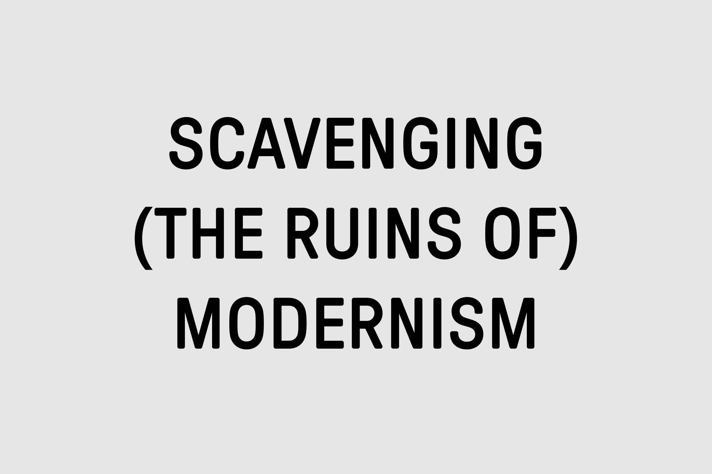

| ※ | Chris Droom | Design + Direction | |||
|---|---|---|---|---|---|
|
I am a digital/graphic designer with a strong focus on typography. I have a careful, reflective practice, grounded in theory and the wider design canon. I am a good listener, and I seek to create welcoming, generative environmens for ideas to be nurtured. I am working to become a member of The International Society of Typographic Designers (ISTD) by the time I'm forty forty-two. |
|||||


|
|||||
| Date | Company | Client | Project | Role | |
| 2022 | MARGINS | typesetting.app |
Detail in Web Typography Modern typesetting for digital applications
|
— | |
| 2022 | MARGINS | South Norwood Type Archive South Norwood Type Walks |
— | ||
| 2022 | MARGINS |  | Scavenging the Ruins of Modernism | — | |
| 2022 | MARGINS | Antonio Gramsci in a Letter from Prison (December 1929) |
— | ||
| 2022 | MARGINS |  |
— | ||
| 2022 | MARGINS |

|
|
||
| 2022 | MARGINS |

|
Graphic Depictions of Structural Linguistics
|
||
| 2022 | MARGINS |
|
|
||
| 2022 | MARGINS |
 |
The Disappearing City Pencil sketches of Bristol (Bedminster / City Centre). Somerset Cotton paper. A6/ kettle-stiched. |
||
| 2022 | MARGINS |
 |
Audre Lorde — Uses of the Erotic | ||
| 2022 | MARGINS |
|
"Power is the ability to define pheonemena, and to make it act in a desired manner" — Huey P. Newton A1 Newsprint |
||
| 2022 | MARGINS | Articles |
A monograph on culture and society
|
||
| 2022 | MARGINS |
Designing Community
|
|||
| 2022 | MARGINS | Design Process |
I’m a big believer in writing as a core design practice. In 2021, I began cofidying many of the working methods and principles I had developed or learned along the way. |
||
| 2022 | MARGINS | Big Change Trust | — | — | |
| Good Praxis Co-operative 149 Fonthill Rd. Finsbury Park London N4 3HH |
Co-founder / Design Director | ||||
| 2021 | Good Praxis | Big Change Trust | New Education Story | Front-end design | |
| 2021 | Good Praxis | I.P.P.R. | Environmental Justice Commission Report |
|
— |
| 2021 | Good Praxis | G.A.T.C. | COP20 Event Stand | Stand design | |
| 2021 | Good Praxis | G.A.T.C. | COP20 Campaign Social |
|
Digital Design |
| 2021 | Good Praxis | Protection Approaches |
How do we create a brand that is both precise and human but avoids charity sector tropes? This mark was to be used across print, screen/stationary. We can consider powerpoint templates, email signatures as digital stationary. The brand has two expressions old new boxes. Approach: Audit site / Audit competitors / Making of / 'designing' / logo sketch filter. |
|
Brand creation |
| 2021 | Good Praxis | Do The Green Thing |
The Colour of the Climate Crisis
An exhibition by Black artists and artists of colour exploring the relationship between racial justice and climate justice. We delivered the digital version of the exhibition, working with the team at Do The Green Thing. |
|
Front-end design |
| 2020 | Good Praxis | Netil Radio | Brand Development | — | |
| 2020 | Good Praxis | Islington Council |
Digital Upskilling Programme
A response to job losses and precarity due to the pandemic. We wanted to create something completely different to standard council comms, yet still fulfil its function as public service design. This was also a good chance to push our company typeface a bit further (Calibre has great capitals) . We had lots of participants say they got in touch because social media posts caught their eye. Our design team also co-created and delivered the course in partnership with Outlandish. |
|
— |
| 2020 | Good Praxis | YRS TRULY | ASAP | — | |
|
Shelter England
88 Old Street London EC1V |
UX/UI Designer | ||||
| 2019 | Shelter | Fundraising | Vertical Rush | UX/UI Design | |
| 2018 | Shelter | Fundraising | Urban Rush | UX/UI Design | |
| 2017 | Shelter | Fundraising | — | ||
| 2016 | Sunshine Cafe A mini-studio with Jessica Tzy |
Digital Product Design | |||
| 2016 | Sunshine Cafe | Ideahouse Malaysia | Ideahouse | Product Designer | |
| 2016 | Sunshine Cafe | Ideahouse Malaysia | ATOP Watches | Product Designer | |
| 2015 | VLT Labs Sdn Bhd Ut C-8-03 Lv 8 Capital 3 No 2 Jalan PJU 1A/7A Petaling Jaya Kuala Lumpur |
Product Designer | |||
| 2014 | VLT Labs | Frenloan | SaaS | Brand Development | |
| 2014 | VLT Labs | Scarlett Of Soho | Front-end development | ||
| 2014 | VLT Labs | GoGet | Brand Development | ||
| 2014 | VLT Labs | GoGet | SaaS | Front-End Development | |
| 2013 | Great State Runway East 1 Victoria St Bristol BS1 6AA |
Interaction Designer | |||
| 2012 | Great State | Kia Motors |
Designed Great State first interactive ‘Retina’ iPad adverts. |
DoubleClick | |
| 2011 | Great State | Orange Brand | — | — | |
| 2011 | Great State | Clarks | Takeovers / OLA |
|
— |
| 2011 | Great State | The Environment Agency | ??? | — | |
| 2011 | Great State | The National Trust | — | Artworking | |
| 2011 | Great State | Friends' Life Insurance | Promotional video | Motion Graphics | |
| 2011 | Great State | The Royal Navy | Brand/Website | Artworking | |
| Dare West Paintworks Unit 2.5, Arnos Vale Bristol BS4 3EH |
Junior Designer | ||||
| 2010 | Dare West | BarclayCard | — | OLA (AS2) | |
| 2010 | Dare West | Premier Inn | — | Mailer design | |
| 2010 | Dare West | Sainsbury's | — | Mailer design | |
| 2010 | Dare West | Sky | — | — | |
| 2010 | Dare West | Vodafone | — | OLA (AS2) | |
| 2010 | MARGINS | LGN Productions | Korahn Gayle |
|
Motion / Titling |
| 2010 | True Digital Royal London Buildings 42-46 Baldwin StBristol BS1 1PN |
Furniture Village | — | Artworking | |
| Blu Inc. The Fire Station 82-84 York RdBedminsterBristol BS3 4AL |
Freelance Front-end Developer | Front-end build | |||
| 2010 | Blu Inc. | Anna Greville | Brochure Website | Front-end build | |
| 2010 | Blu Inc. | Internal | Blog | Front-end build | |
| 2009 | MARGINS | 4AD / Young Turks | M. Ward | Flash (AS2) OLA | |
| 2009 | MARGINS | 4AD / Rough Trade | Jarvis Cocker | Flash (AS2) OLA | |
| Feref Limited 17–18 Great Pulteney St London W1F 9NE |
Freelance Flash Designer (AS2) | ||||
| 2008 | Feref | The Kingdom | The Kingdom | Flash (AS2) OLA | |
| 2008 | Feref | Vivid Associates | Death Proof | Artworking | |
| 2008 | Ralph & Co. 27–33 Bethnal Green RoadLondon E1 6LA |
Freelance Flash Designer | |||
| 2008 | Ralph & Co | ESPN | Rugby Union | Flash Designer (OLA) | |
| 2008 | Virgin Media 160 Great Portland Street London W1W 5QA |
Freelance Digital Designer | |||
| 2008 | Virgin Media | Walt Disney Pictures | — | Flash Designer (OLA) | |
| 2008 | Virgin Media | Young Turks | — | Flash Designer (OLA) | |
| Dancing Bee Ltd. Clapham North Art Centre Unit 7H, 
26-32 Voltaire Road 
London SW4 6DH |
Intern | ||||
| 2007 | Dancing Bee Ltd | The Biography Channel | — | Featurebox | |
| 2007 | Dancing Bee Ltd. | The Discovery Channel | — | Flash (AS2) OLA | |
| 2007 | Dancing Bee Ltd. | Braun | — | Artworking | |
| Gemin-i 509 New Loom House101 Backchurch Lane London E1 1LU |
Intern (Volunteer) | ||||
| 2006 | Gemin-i | ActionAid | — | Platform design | |
| 2006 | Gemin-i | Plan ID | — | Flash (AS2) OLA | |
| 2006 | Gemin-i | Sucata Run | — | Artworking | |
| Date | — | — | Learning | Role | |

|
|||||
| Testimonials |
It's been such a pleasure to work with you, Chris. Thanks so much for all your time, expertise and patience!Melissa Evans, previously at Big Change If you'd be up for this kind of work in the future we'd love to work with you on it. Melissa was full of praise for how you worked together and the videos I've seen have been great.Jane McCarthy, Marketing and Communications Manager, Big Change I was always curious about Photoshop but I never had the chance to learn how to use it. Moreover, I didn't think it was possible to learn it online! Chris has been a really good tutor for my learning: clear, patient, expert! Among other online courses experienced during the pandemic, I have to say that this was the only one with a value not only for my creative enjoyment but also for my job profile.— Manuela Terranova, Islington Council digital upskilling participant |
||||
| 2023 | MARGINS | Media Diversified | |||
| 2023 | MARGINS | Byline Times | |||
| 1997 |
I remember seeing this site in 1997 and it made such a big impression on me. From the very beginning, I came to ‚Äòweb design‚Äô via a visual communication interest. Most people that were making websites back then were coming at it from a technological point of view. Croydon School of Art: Distinction üíÖüèæ |
||||
| 1996 |
The library at my school had some multimedia PCs. On a few of them was Corel Draw 4, so I’d stay back after school just noodling until they locked up. |
||||
| 1996 |
Typefaces
This is gnarly, but all work copyright me or respective companies ©2023. Thanks. ¬∂) |
||||